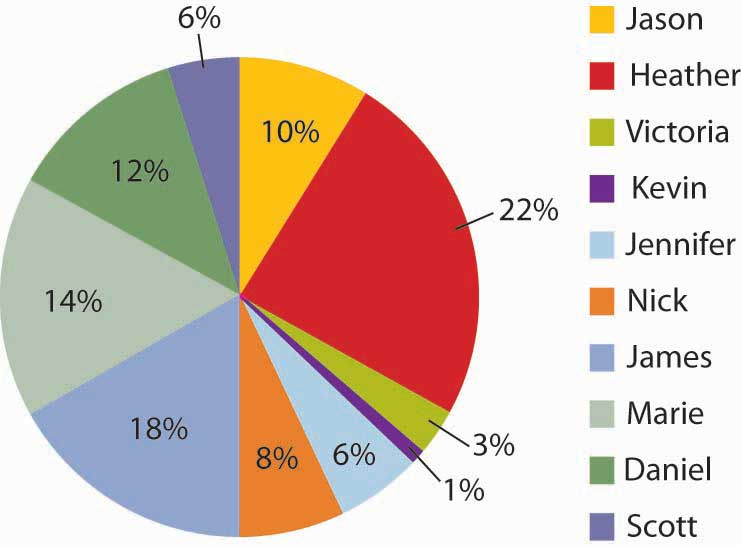

After studying this section, students should be able to:
Share of voice (SOV)The relative fraction of ad inventory a single advertiser uses within a defined market over a specified time period. is the relative fraction of ad inventory a single advertiser uses within a defined market over a specified time period. It measures how you are doing relative to competitors and relative to all the ads within your given space. It tells you the total percentage that you possess of the particular niche, market, or audience that you are targeting. The obvious way for a client to attain high SOV is to buy a lot of ad space. Another way is to have competitors that don’t advertise very much; remember SOV is a measure of relative activity.
Figure 7.5 Share of Voice
The share of voice concept can be demonstrated by the participation in a class. The students who participate the most relative to other students have a larger share of voice in the class. The same happens in advertising.
Online, Google uses a similar metric it calls Impression ShareA metric used by Web site hosts to represent the percentage of times an ad was actually shown in relation to the total number of chances it could have been shown, based on its keyword and campaign settings. to represent the percentage of times your ads were actually shown in relation to the total number of chances your ads could have been shown, based on your keyword and campaign settings.“Discover your Share of Voice with Impression Share Reporting,” Google AdWords, http://adwords.blogspot.com/2007/07/discover-your-share-of-voice-with.html, (accessed July 23, 2008).
As msnbc.com’s marketing budget is nowhere near those of its largest rivals like CNN or the New York Times, SS+K didn’t even think about attaining competitive SOV share in this campaign. However, since a major objective for the campaign was to increase awareness and impressions, the agency deliberately used tactics that resulted in large SOV on a particular day. For example, when they placed their ads on Web sites they would try to engineer a “homepage takeover” or a “roadblock,” meaning that all the available ad units on the homepage are dedicated to one advertiser.
In situations where big clients compete on a fairly even playing field (unlike SS+K’s “David and Goliath” situation with msnbc.com), share of voice is an important indicator of competitiveness. It reflects the extent to which your customers are being influenced by your ads versus those of rivals who also try to get their attention with similar messages. Long-term analysis shows that brands that increase their share of voice with powerful advertising stand a better chance of increasing their market share.
High SOV helps provide top-of-mind awareness and provides a company with a competitive advantage because this awareness allows it to dictate what criteria consumers use to evaluate products.“Pepsi introduces freshness dating,” Chain Drug Review (April, 1994), http://findarticles.com/p/articles/mi_hb3007/is_199404/ai_n7964159, (accessed July 23, 2008). For example, in the last century (1994, to be exact) the heavy advertiser Pepsi introduced “freshness dating” on its products and convinced many consumers that it’s important to buy cans of soda that are less than a year old.“Research Ensures Rewards,” Marketing Week (July 5, 2007), p33. This campaign was pretty successful—even though in reality a very small percentage of soft drink inventory in a grocery store would linger on the shelves for that long. In the ad biz, it’s often true that “he who has the bucks, makes the rules.”
How much share of voice can you afford? How much would it cost to buy every minute of commercial time in the Super Bowl? You can’t afford to buy it all, but you can buy some fraction of it.
Attaining high SOV usually means spending more than your competitors. If your analysis suggests that your competitors spend $5 million on media buys, then you need to spend $5 million just to match them and achieve a 50% SOV. If the competition has cut back on spending (such as during an economic downturn like we’re now experiencing), then you might maintain your current level of ad spending and still garner a high SOV. If your company has many competitors or bigger competitors, you may find it impossible to outspend them to achieve a high SOV.
To promote its DVD of Hollow Man, movie studio Columbia Tri-Star asked its ad agency, Universal McCann Los Angeles, to reach as many consumers as possible with a relatively low budget. Like SS+K did for msnbc.com, the agency created a “roadblock” campaign on the top online portals, entertainment properties, and sci-fi sites over a few hours in one specific day. During a roadblockAn ad strategy in which the only ads that appear for a specified time period are those for one company, achieving 100% SOV for those hours., the only ads that appear are those for that company. Thus, on one Friday during the lunch hour and during 6:00 p.m. to 9:00 p.m., the only ads shown on these sites were for Hollow Man, achieving 100% SOV for those hours.
Did this saturation strategy work? Several online vendors reported huge sales spikes of Hollow Man, and one vendor reported a 25% sales increase during the time the campaign was live. In addition, the DVD debuted in the number one position for sales and remained in the Top-Twenty Chart for three months.Joseph Jaffe, “Dominate Online Share of Voice,” iMedia Connection (February 24, 2003), http://www.imediaconnection.com/content/1050.asp, (accessed July 23, 2008).
For small companies, share of voice is often not an appropriate metric because there are so many bigger competitors who will outspend the smaller company. The online roadblock tactic might be one way of achieving share of voice that is less expensive. Perhaps a better way to set budgets, however, might be to use the return on investment approach, as we’ll see next.
Share of voice is a way to think about the impact one brand’s advertising has on its audience—relative to what its competitors are doing. Clients with reasonably equal resources can compare how active they are (i.e., how many messages the campaign sends out). Clients who are at a financial disadvantage have to be a bit more creative. Sometimes they prefer to concentrate their limited resources to get a bigger bang for the buck during a limited time period and forgo the opportunity to send out their messages at other times.